…という訳で、山陰地方に伝わる摩訶不思議な習俗、
札打ち。
お次は舞台を鳥取県に映してその習俗の全容を掴もうという目論み。
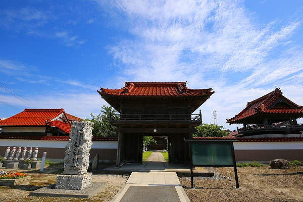
最初に訪れたのは境港市の
龍泉寺。
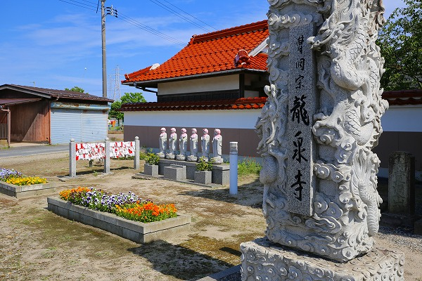
山門前に六地蔵が並んでおり、その脇に札が貼られていた。
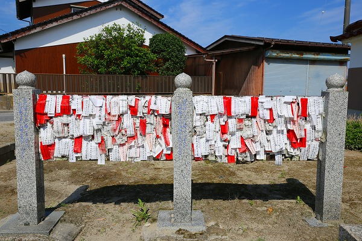
島根の札打ちと明らかに異なるのは
赤い札が混ざっている事。
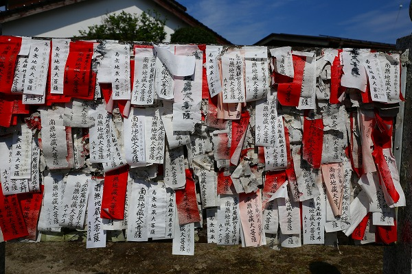
これは
最後の札打ちを赤い札で締める為だ。
島根だけでなく、以前訪れた千葉の四十九堂、茨城の百堂の札打ちでも見られなかった新たな展開である。
ところ変わって米子市内。
鳥取県の札打ちの中心地だ。
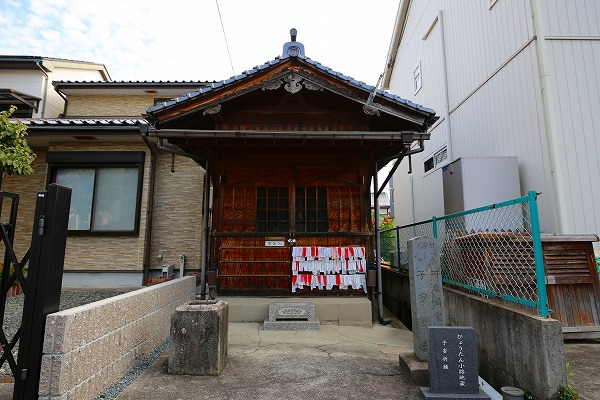
まずは米子駅の300ｍほど北にある
ひょうたん小路地蔵。
米子市中心部には約30か所の地蔵尊が点在しており、身内に不幸が出た場合、
遺族が戒名を記した紙札を7日ごとに貼って巡るのが習わしとなっている。
順番としてはまず自分の菩提寺、次に30か所の地蔵尊の任意のどれか、で、後に述べるが寺町にあるお寺、最後に湊山公園、という順になっているそうな。
その30地蔵の1番札所がこのひょうたん小路地蔵、というわけ。
折角なのでこれから30か所の地蔵を全部巡ってみようと思う。
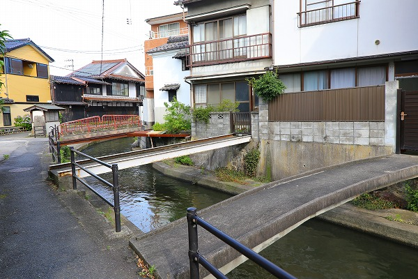
地蔵は市内中心部を流れる加茂川沿いに点在している。
この川は古くから米子市内の水運の要であり、無数の橋が架かっている。
場所によっては各戸がそれぞれ個別にマイ橋を架けている塩梅で、市民とは切っても切れぬ川なのである。

で、その加茂川沿いに数多くの地蔵尊が安置されている。
最初に現れるのはひょうたん小路地蔵に次いで2番の札所である
榎地蔵。
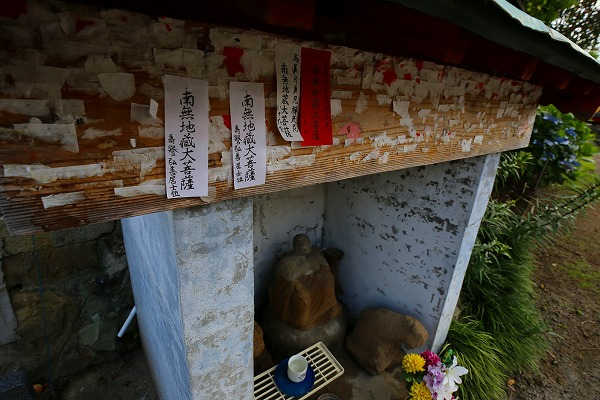
運河のほとりにあるこじんまりした祠に小さな地蔵が祀られている。
紙札は数枚しかなかったが、剥がされた後が無数にあり、相当の数の紙札が打たれた痕跡があった。
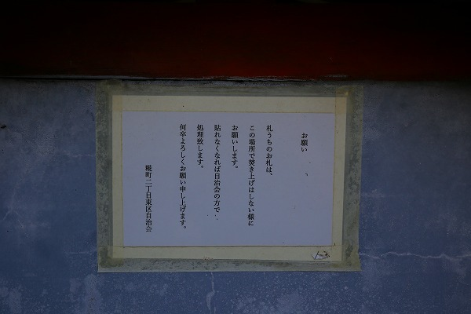
札を炊き上げしないようにとの貼り紙。
紙札をここで炊いてしまう人もいるようだ。
そもそもがこの札打ちの習俗自体が誰かが主導して始めたものではないので、様々な解釈がされているようだ。
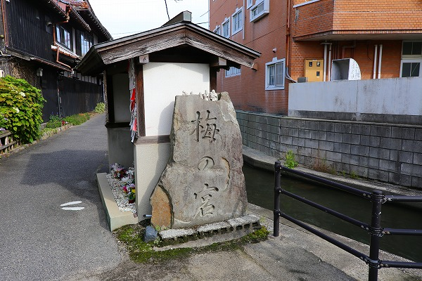
小さな川沿いに歩いて行くと次の札所が現れた。
3番の
延命院地蔵だ。
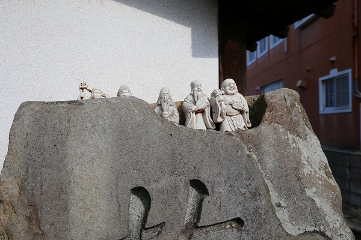
お堂の傍らにある「梅の宮」という石碑の上には七福神のミニチュアが並んでいた。
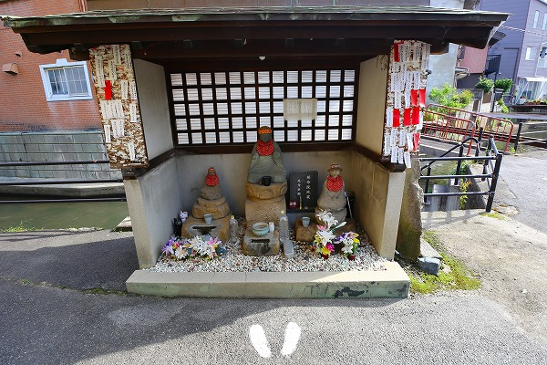
紙札はお堂の両サイドに貼られていた。
正面にはお参りする所に足型があってほほえましい。
この足型は横断歩道の手前などにもあった。
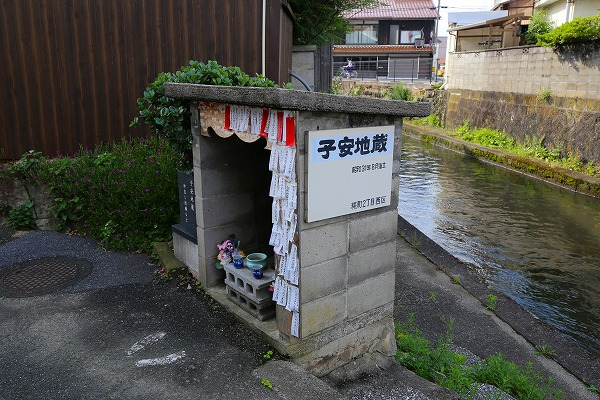
次にあったのは4番目の
子安地蔵。
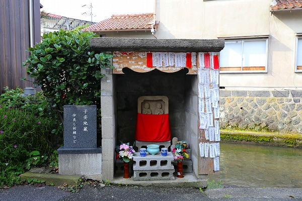
加茂川と地蔵堂が米子の街と一体化している様子が実に素晴らしい。
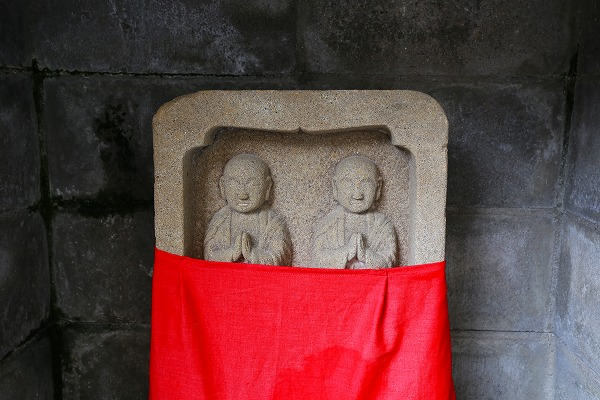
本当にステキな関係だと思う。
お次は
法勝寺町橋地蔵。
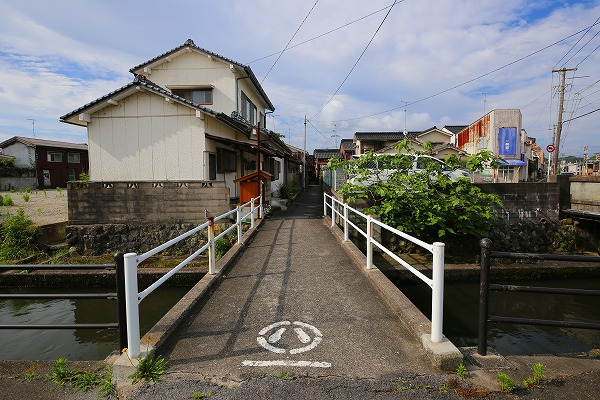
小さな橋の袂に小さな祠がある。
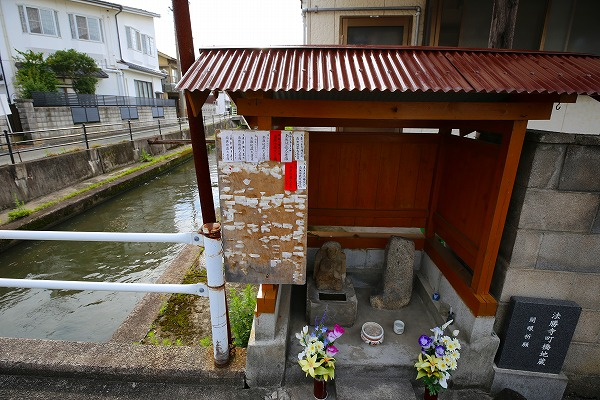
ここにも札打ちがなされていた。
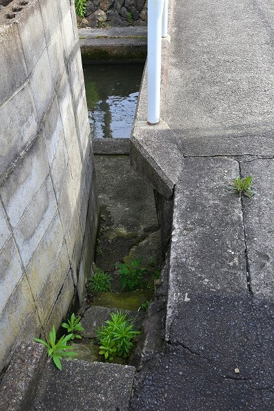
橋の袂には人一人がやっと通れる階段があった。川に降りるための通路か。
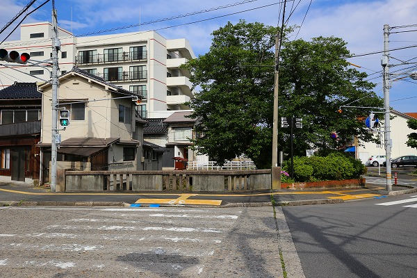
法勝寺町橋のすぐ隣には大きな橋が架かっている。
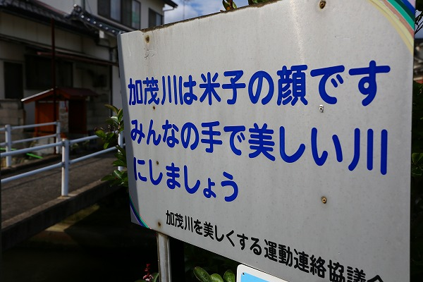
現代の米子の道路から見ると、さして目立たない小さな川なのだが、この川から米子という街を逆照射すると実に魅力的な街に思える。
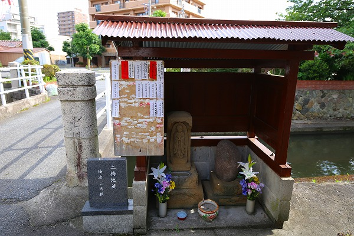
次は6番、
土橋地蔵。
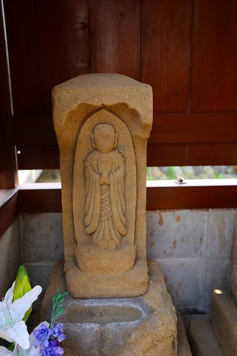
地蔵像は江戸時代のものか。
この加茂川に点在する地蔵尊の歴史は江戸時代に遡る。
その始まりは栗木尚謙の樵濯集に詳しい。
要約する。
時は安永のはじめごろ、元大工頭の彦祖という者が市内の所々に地蔵を安置し祠を造った。
それが徐々に広まり、参詣者も増えたのだという。
彦祖は元々大阪の宮大工だったらしい。
元々は36か所の地蔵尊を定めていたそうだが、何故か今では30か所になっている。
さらに紛らわしいのが案内によっては札所が26か所だったり24か所だったり、要するに最後の方の札所が曖昧になっているのだ。
ここでは加茂川まつり実行委員会刊の「
米子加茂川地蔵めぐりガイドマップ」を参考にして札所の数は31か所、ということにしておく。
さらに進もう。
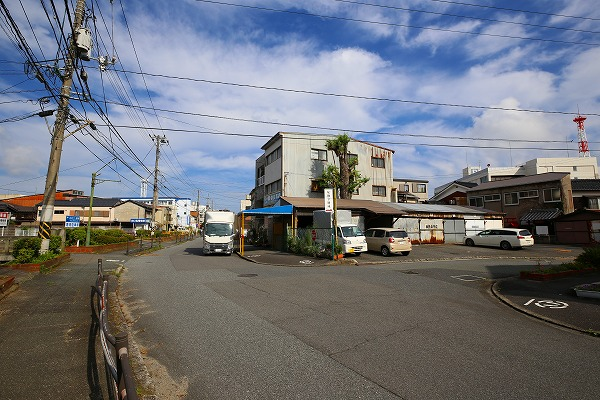
次は加茂川から少しだけ離れた位置にある７番
瑜伽堂地蔵。
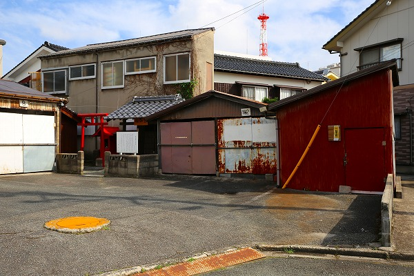
倉庫の様な駐車場の様な一画にある小さなお堂の脇にひっそりと地蔵堂がある。
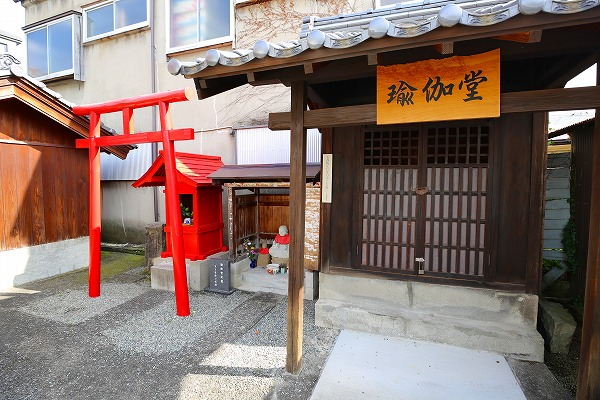
瑜伽とはヨガの語源でもあり、仏教では相合と訳されている概念だ。
堂内には薬師如来と阿弥陀仏が祀られているそうだが、鍵がかかっていて中は見られなかった。
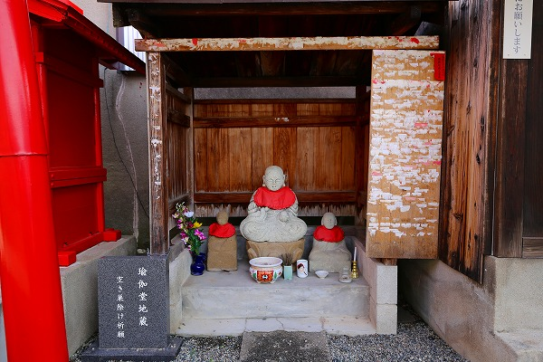
ほとんどの紙札は撤去されているが、貼られた跡からするとこれまでの地蔵よりも多い異様な気がする。
やはり段々街の中心部に近づいてきたからだろうか。
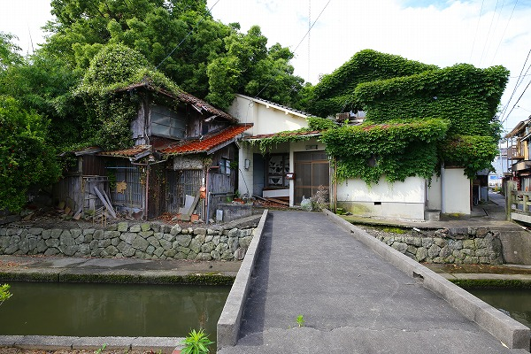
瑜伽堂のすぐ近くにあったステキな廃墟。
建物のかなりの部分が草木に覆われ、ちょっとした異空間のような雰囲気を醸し出していた。
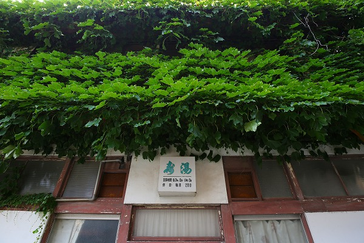
あ、銭湯だったんだ…。
さらに進みましょう。
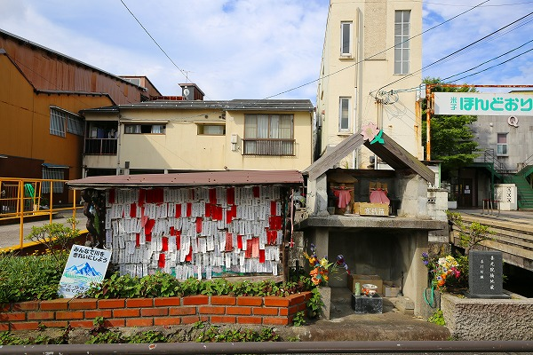
８番
善光院橋地蔵。
橋の向こうにほんどおりという看板が見えるが、その先にアーケードがあり、昔ながらの商店街となっている。
ちなみにそのアーケードの一画に映画監督の岡本喜八の生家がある。
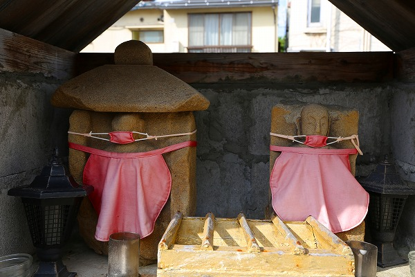
で、地蔵尊だがコロナ禍なのでマスクをしていた。
このような路傍の石仏巡りをしていると、地元の方々と話したりするのが楽しいのだが、この御時世、それも自重せざるを得なかったのが残念であった。
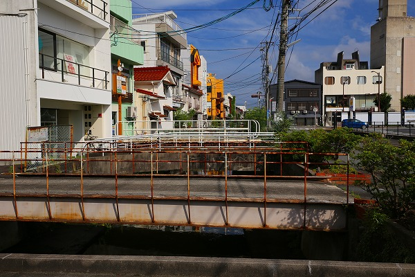
繁華街に近いので橋の数も増えてきた。
建物１棟ごとに橋が架かっている状態。
そうこうしているうちに川は目抜き通りの国道9号線を越え、古い建物が多いエリアに入っていく。
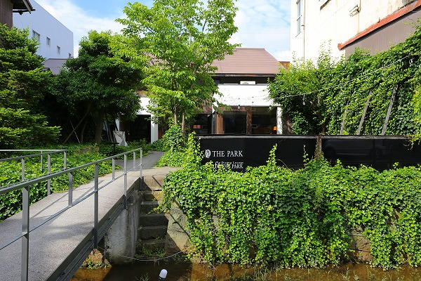
小洒落た店などもちらほら。
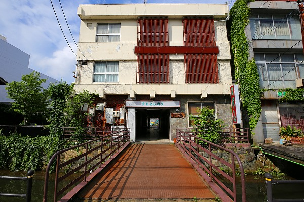
なんかこういう風景に凄く惹かれる。
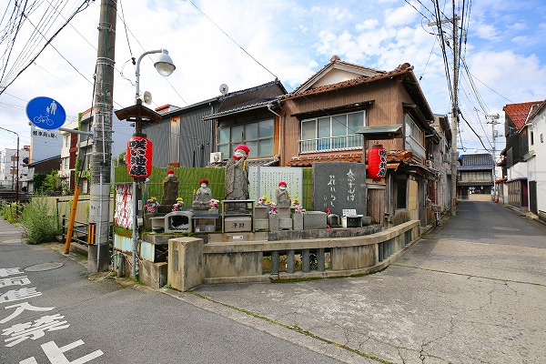
しばらく歩くと次の地蔵が見えてくる。
9番の
藪根地蔵と10番の
咲い地蔵だ。
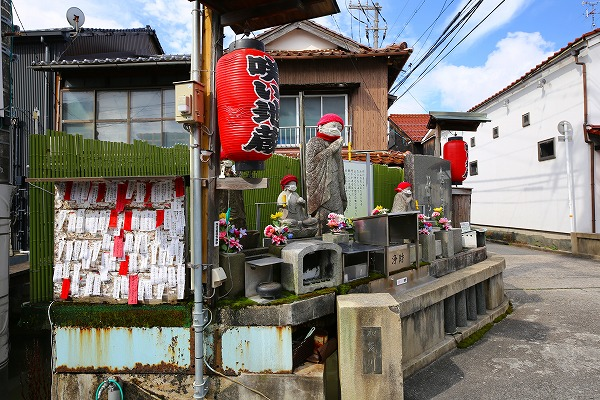
9番の藪根地蔵は別の場所にあったのだが、わけあってここに移転したという。
中央で合掌している大きな地蔵が10番の咲い（わらい）地蔵だ。
この地蔵は例外的に新しく建立されたもので、この
加茂川地蔵のセンター的存在になっている。
実際、ここに札打ちをする人は多く、札が沢山貼られていた。
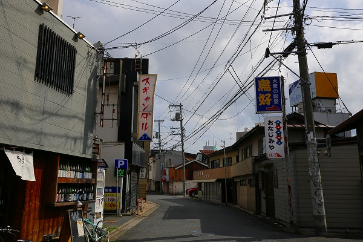
ここは米子の飲み屋街の一画にあたる。
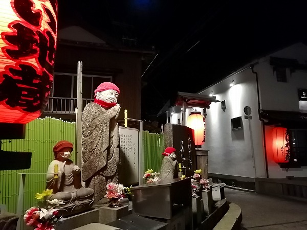
実は前日ロケハンがてら飲み屋街をウロウロしたのだが、ほとんどの店は閉まっており、閑散としていた。
辛うじて開いていた向かいの店の赤ちょうちんと咲い地蔵の提灯が妙にシンクロしていた。
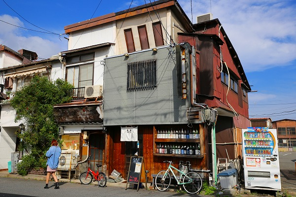
で、咲い地蔵を撮影していると背後から嬌声が聞こえてきた。
数少ない開いていた店から若いカップルが酔っぱらいながら飛び出してきた。
お前らこんな時間まで飲んでたのか。タフだなあ。
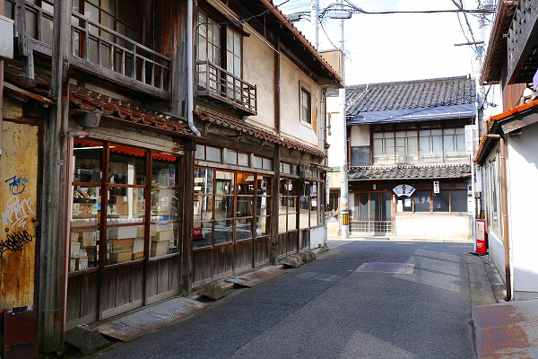
咲い地蔵の橋を越えると古い建物が密集しているエリアがあった。
この辺りが旧市街の中心だったのだろうか。
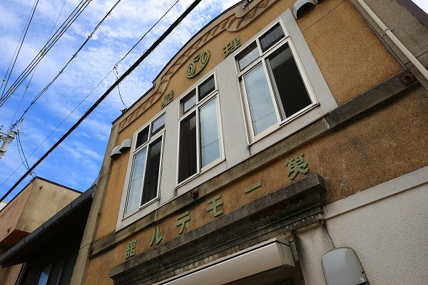
趣のある街並みだった。
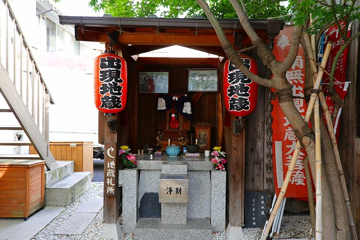
で、その一画にある
出現地蔵。11番札所だ。
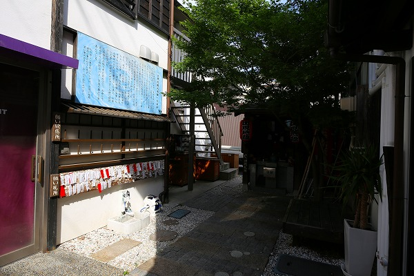
ここは川沿いではなく建物の合間にあった。
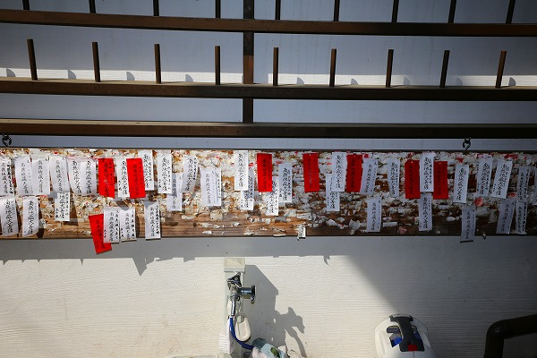
やはり繁華街に近いので貼り札も多かった。
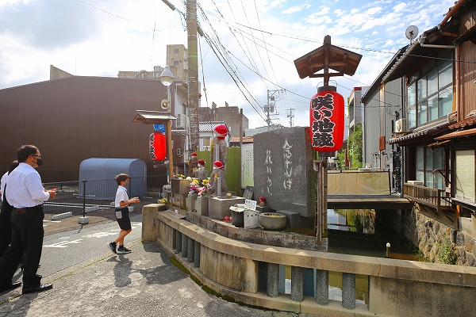
…と、咲い地蔵に戻ると喪服を着た人達が札を打ちに来ていた。
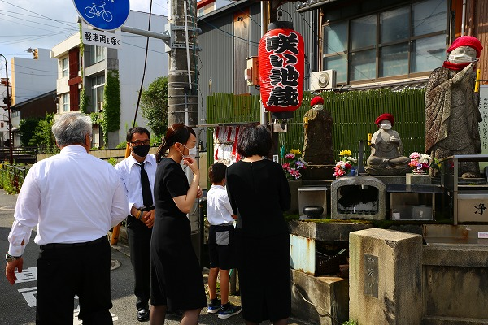
聞けばこれから寺に行って四十九日の法要をしに行くのだという。
赤い紙札を貼って、札打ちは完了、である。お疲れ様でした。
再び次の札所を目指す。
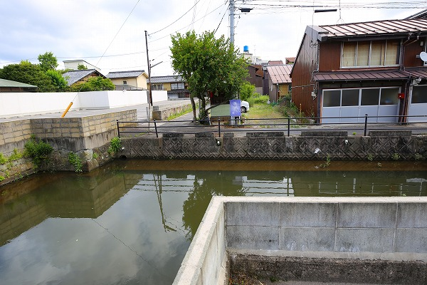
これまで真っ直ぐ流れていた加茂川はここでクランク状に曲がる。
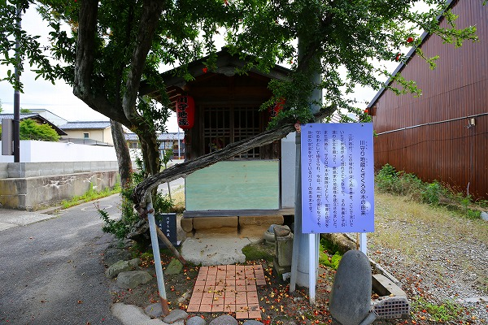
その曲がり角にの畔にある12番、
川守り地蔵。
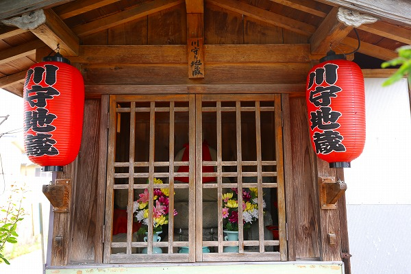
元々この加茂川の地蔵尊群は川で亡くなった子供の供養のためにつくられたという。
確かに街中を流れる川だけに溺れる子供も多かったのだろう。
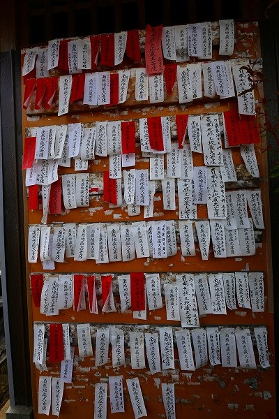
川に落ちた子供がこの付近で浮かんで、生き返ったという言い伝えが残っているそうだ。
川がクランク状になっているからなのだろうが、ここの地蔵のお陰と信じる人がいてもおかしくはない。
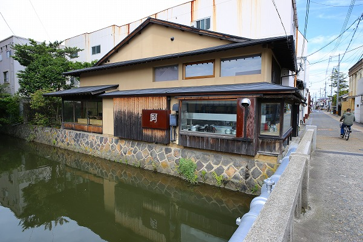
かつては洪水のたびに被害が多かったというが、今は穏やかな川である。
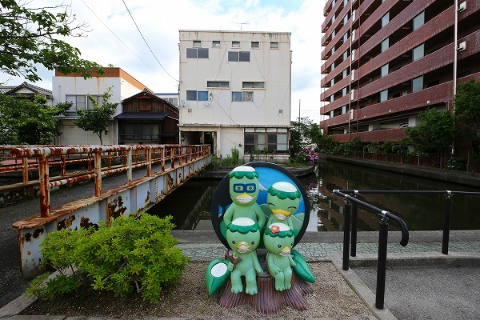
クランク状の部分を抜けると川幅がぐっと広くなる。
何故か河童の像が。
こちらは水木しげる贈呈の河童像。
カッパの三平が人間界にやって来て、それまでキュウリが最高の御馳走だと思っていたがスイカを食べてその美味しさに驚いた、というシーンだそうです。
観光客向けに河童の像を作ったのだろうが、
そんなのより地蔵めぐりの方が全然面白いのに。
この辺りになると、川沿いに蔵があり、橋も高い。
先程までたくさんあった個人が勝手に架けた橋は少なくなってくる。
昔は廻船、今は観光用のボートが通るからだろう。
で、次は16番
天神橋地蔵。
13～15番が飛んでしまったが、先程の川守り地蔵の先の札所が川から離れた場所にあるので、ここは川沿いの地蔵を先に訪れることにする。
川沿いに車道があり、その向かいの駐車場の一画にあるため、川との一体感は薄い地蔵堂だ。
それでも紙札はたくさん貼られていた。
お次は
中ノ棚橋地蔵。17番。
歩道沿いにあるがなんだか寂しそうな感じ。
札もあまり打たれていない。
18番、
塚と橋地蔵。
ここも寂しそう。
このような蔵並び往時の賑わいを今に伝えている。
19番、
橋守り地蔵。
先程と同じような立地だが、ここには多くの札が貼られていた。
廻船問屋の後藤家住宅。国指定の重文。

…の川向いにある
橋番地蔵。20番。
打ち札は少ないが、何故か絵馬の奉納コーナーがある。
アマビエ絵馬ですね。
これにて、加茂川沿いの地蔵堂はお終い。
オイオイオイ、31番まであるんじゃないのかよお、との声が聞こえてきそうだが、心配ご無用。
この後の札所は加茂川の北側にある寺町一帯に点在しているのだ。
先程抜け落ちた13～15番の札所もこの寺町サイドからアプローチしてみるつもりだ。
では寺町編、行ってみよ！
で、寺町で最初に訪れたのが吉祥院。
寺町の一番西端にあたるお寺だ。
ここに負わすのが
青石地蔵。
21番目の札所だ。
嘉永年間に米子城の石垣を直す際に採られた石の中に石垣にするにはもったいない綺麗な石があったのでそれを地蔵に仕立てたという伝承がある。
成程確かに綺麗な青石だ。
次に22番、
心光寺の地蔵尊。
この辺りから地蔵の札打ちの順番が市の観光案内や冊子やガイドマップなどでまちまちになって来る。
各々の地蔵が隣接した寺院内にあるためだ。
そもそも全部の地蔵を順番に回っていくというレギュレーション自体がないのだから、加茂川の地蔵を上流から下流に巡った後はどこでもいい感じになっちゃっているのだろう。
…というわけでここから先の札所の番数はチョットあやふやになって来ることを先にお詫びしておく。
つか俺のせいじゃないかんね！
で、23番法蔵寺の
味噌なめ地蔵。
口に味噌を塗るとイボがとれるそうな。
法蔵寺の隣の実成寺。
ここは札所ではないが、門前の門柱に札が貼られている。
もはやどこでもいいのか。
実成寺の隣の妙興寺。
米子藩家老の墓の傍らの石碑にたくさんの札が貼られていた。
ここも特に札所にはなっていない。
そのまた隣の妙善寺。
ここも札所ではないが入口の門柱に札が貼られていた。
妙善寺の向かいの小道を入る。
するとその先に小さなお堂が見えてくる。
コレが13番札所の
与太郎地蔵だ。
地蔵とはいうものの堂中に祀られているのは自然石だ。
かつては別の場所にあったようだ。
再び寺町に戻る。
安國寺。いきなり31番目、つまり最後の札所が現れる。
23→13→30と行ったり来たりで申し訳ないが、俺のせいじゃないので勘弁して。
で、隣の
瑞仙寺。30番。
先程の加茂川沿いの地蔵と違い、お寺の地蔵は六地蔵が多い。
29番、
福厳院。ここも六地蔵だ。
寺町周辺をぶらぶら。
次に現れたのは24番
寺町地蔵。
ここ、空き地にポツンと建っているんだけど、お堂とかお寺じゃなくて
普通の家。
一階がシャッターになっているから元々店だったのだろうか？
何故そんな普通の家（店）にお札が貼られているんだろう？
これだけ見たら呪いを封印してる家みたい。
さらに市内をぶらぶら。
15番、
つなぎ地蔵。
後の建物が町おこし的な拠点になっているようで、このお地蔵さんも少しこれまで紹介してきたものとは意味合いが違う。
札を貼らないでください、との貼り紙が。
地蔵を見たら札を貼りたくなるのが米子っ子の性なんじゃないの？貼らせたらいいじゃない。
その後、加茂川の河口に移動。
先程の20番の橋番地蔵（アマビエの絵馬があったところね）から200mほど下ると加茂川は中海に流れ着く。
河口の北側には港があり、その一画に地蔵堂があるのだ。
28番、
みなと地蔵である。
何故他から離れたところにポツンとあるのかは判らないが、加茂川の河口というのがひとつのポイントなのだろうか。
ここにもたくさんの札が貼られていた。
次は米子城址にほど近い
城山大師。
ここは26番目の札所になっている。

その傍らに地蔵堂があり、札打ちがなされていた。
祠の中には複数の石仏が安置されていた。
隣の祠の脇にも札打ちがなされていた。
で、最後に訪れたのは港山公園。
ここは加茂川河口の南側に位置し、かつては清洞寺という寺があった。
今でこそ埋め立てられ池になっているが、かつては中海に面していたそうな。
その池のほとりに大きな岩がある。
その巨石の傍らに札が貼られている。
ここは
清洞寺地蔵と呼ばれており、札打ち供養の打ち止めの札所となっている。
先に述べたガイドマップには27番となっているが、実質的にはここが札所のラストなのだ。
おびただしい数の札が貼られ剥がされまた貼られそして剥がされ…の繰り返しを経て願いの蓄積の様なものが可視化されている。
米子城主の親の供養のために建立した五輪塔。
何故この地が打ち止めになっているのかは判らないが、加茂川の上流から順に札所が並んでいることを考えると、やはり締めは河口にあるのがおさまりが良く、たまたまそこにお寺があったから、ということなのだろう。
これにて米子の地蔵めぐりは終了。
長い道中お付き合いくださってありがとうございました。
ええと、見落としはないよな、と、カウントしてみると、あ！25番！
完全に忘れてました。コンプリートならず、残念！
…こうして米子の街を札打ちというフィルターを通して見てきたわけだが、街中に赤や白の札がたなびいている様子は実に印象的だった。
一般的に死者供養の為の習俗は墓地や寺で行われるもので、普段の生活圏内で目にすることはあまりない。
ところが米子の街では生活道路や古い町並み、小路、飲み屋街などと死者供養の紙札が一体化しているのだ。
これは松江にも言えることだが、この地域は
死に対する考えがオープンなのかもしれないですね。